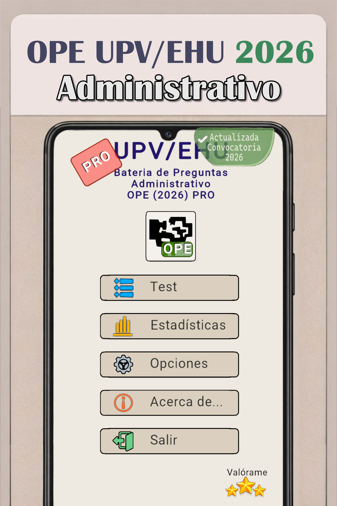
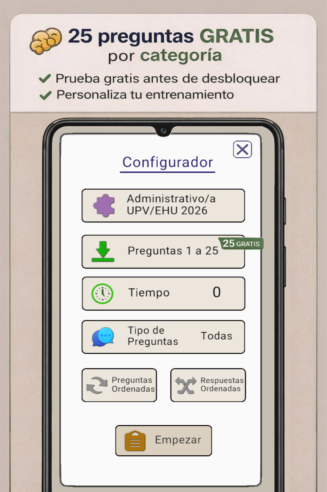
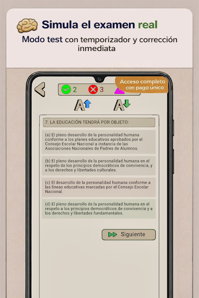
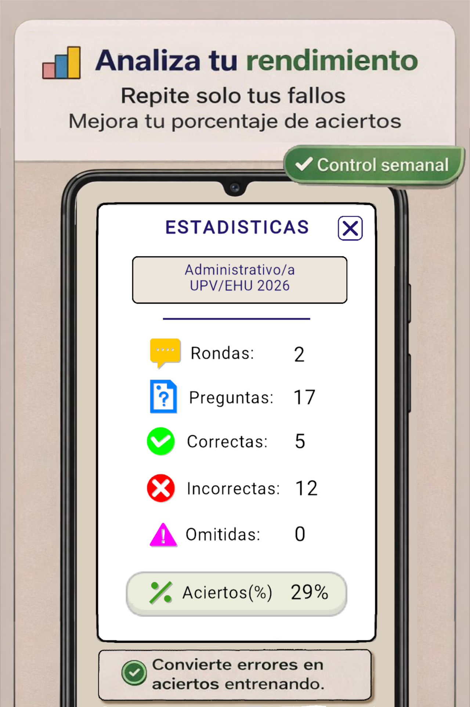

App Test Administrativo UPV/EHU 2026: practica las 500 preguntas
Una app centrada en la batería oficial de Administrativo: practicar, detectar fallos, repetir lo que no dominas y entrenar el formato real del examen.
Última actualización:
Si estás en ordenador
Escanea el código para abrir la ficha directamente en tu Android.
La app por dentro
Capturas completas de la versión mostrada actualmente, sin recortarlas a un marco horizontal.




Mira cómo funciona la app
El reproductor solo se carga cuando pulsas reproducir.
Qué puedes hacer en la app
Practicar la batería completa
Trabaja las 500 preguntas publicadas para la Escala Administrativa.
Volver a lo que fallas
Concentra el repaso en las preguntas que todavía no salen con seguridad.
Entrenar el formato de examen
Practica el formato de 60 + 20 y el límite de 80 minutos.
Seguir tu progreso
Consulta estadísticas para distinguir lo que ya controlas de lo que necesita repaso.
Antes de instalar: comprueba cómo resolvemos las preguntas
La app sirve para practicar. La web hace visible el trabajo de revisión: diferencia pregunta oficial y respuesta editorial, documenta correcciones y enlaza fuentes cuando una letra necesita explicación.
Pasa del análisis a la práctica.
Si ya sabes cómo funciona la convocatoria y quieres trabajar la batería, abre la app y empieza a contestar.
500 preguntas.
Falladas y dudosas.
60 + 20 · 80 minutos.
Estadísticas de práctica.